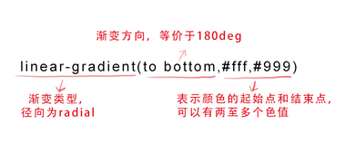

语法： CSS3 Gradient 分为线性渐变(linear)和径向渐变(radial)。由于不同的渲染引 擎实现渐变的语法不同，这里我们只针对线性渐变的W3C 标准语法来分析其用法，其 余大家可以查阅相关资料。W3C 语法已经得到了 IE10+、Firefox19.0+、Chrome26.0+ 和 Opera12.1+等浏览器的支持。 这一小节我们来说一下线性渐变： 
从左到右的线性渐变背景
右下角向左上角的线性渐变背景